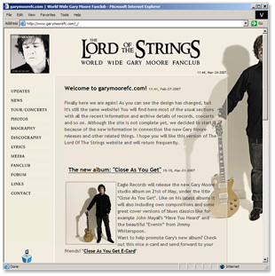

The Lord Of The Strings is unofficial World Wide Gary Moore Fanclub maintaned by Zoltan Csillag and a group of volunteers. The club is not officially sanctioned by Gary Moore office.

February 27, 2007
The Lord Of The Strings is unofficial World Wide Gary Moore Fanclub maintaned by Zoltan Csillag and a group of volunteers. The club is not officially sanctioned by Gary Moore office.
